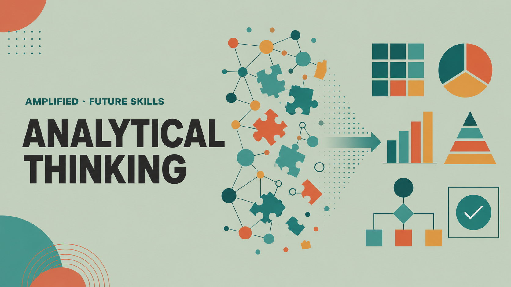
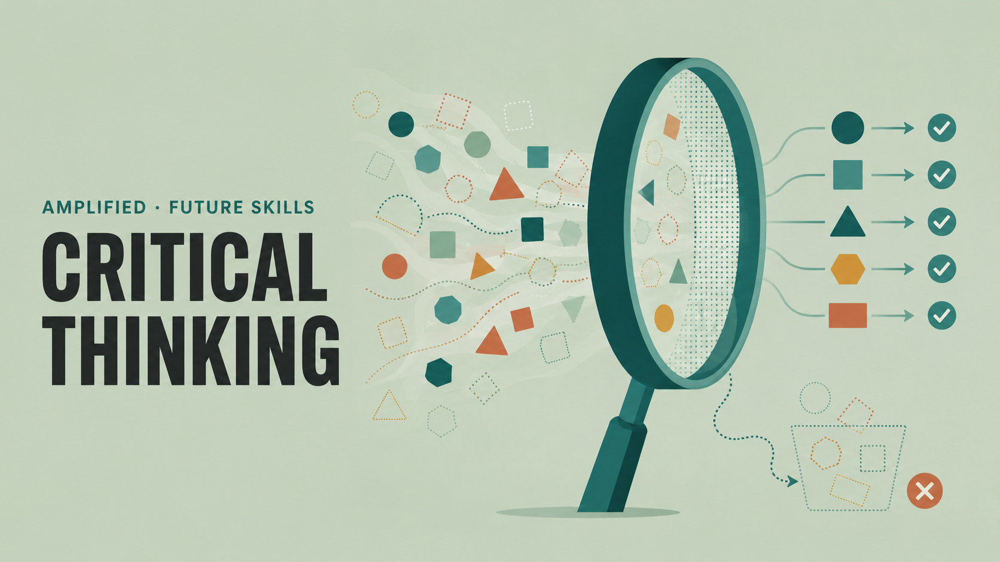

Why this matters
The cognitive apprenticeship is quietly disappearing
Entry-level tasks — synthesising research, producing first-pass analysis, organising information — were never just grunt work. They were how professionals developed judgment, pattern recognition, and the ability to distinguish what matters from what doesn't.
As AI handles more of that work, the pipeline that turned junior contributors into strategic thinkers is breaking down. Heavy reliance on AI tools correlates with declining critical thinking abilities, driven by cognitive offloading.4 The capability that took years to build is now going unexercised.
This library addresses that gap directly. Each skill is grounded in the WEF Core Skills 2030 framework and cross-referenced with research from McKinsey, Udemy, and Microsoft on what employers are actually struggling to find. They are the skills that determine whether people remain indispensable as AI handles the rest.
Sources
- World Economic Forum — Future of Jobs Report 2025. Core skills change estimate (39%) and reskilling projection (59 in 100 workers).
- Microsoft — Work Trend Index 2025. Workforce capacity and energy deficit data (80%).
- Udemy — Global Learning & Skills Trends Report 2026. Critical thinking learning growth (+37% year-over-year) and AI adoption at work (76%).
- Gerlich, M. (2025). AI Tools in Society: Impacts on Cognitive Offloading and the Future of Critical Thinking. Societies, 15(1), 6. Peer-reviewed study of 666 participants finding a significant negative correlation between frequent AI tool use and critical thinking ability, mediated by cognitive offloading.
The evidence
Where the skills in this library sit in 2030
The WEF Future of Jobs Report 2025 mapped every core skill on two axes: how essential it is today, and how much employers expect its importance to grow. Skills covered in this library cluster in the top-right quadrant — core now, and rising fast.
The cluster reflects a consistent pattern: the capabilities most likely to compound in value are the hardest to automate and the easiest to neglect.

About the library
What's here, and how to use it
The skills in this library are not the ones getting the most attention in L&D conversations right now. Most organisations are focused on AI fluency — and that matters. But the skills that make a difference as AI handles more cognitive work are the ones that have always stood the test of time and don't get automated away: analytical reasoning, creative problem-solving, systems awareness, resilience, the ability to lead without authority.
Each skill here is standalone — a self-contained resource you can start with wherever it's most relevant to your work right now. Over time, as the library grows, related skills will be packaged into guided learning journeys for people who want a more structured path through a connected set of capabilities.
Every entry includes two access points: a short primer that covers the core concept, and a full learning plan with curated resources, activities, and a habit builder you can embed into real work. Start with whichever fits your time and intent.
How each skill is structured
The library
Browse by skill

Without it, complex problems stay complex. People respond to symptoms, draw conclusions from the most visible information rather than the most relevant, and make decisions that feel structured but aren't.
The skill produces a clear, structured picture of what is happening and why — the foundation that any reliable solution has to rest on. It means building a structure before you analyse, tracing symptoms to their source rather than stopping at the first plausible cause, and knowing the difference between what the evidence shows and what you are assuming.

Without it, well-presented conclusions get treated as verified ones. A confident report, a polished AI analysis, or an argument that sounds airtight all get acted on before anyone checks what they're standing on.
The skill produces a clear judgment — what's sound, what's questionable, and what's missing — before a conclusion gets built on. It means separating claims from evidence, checking that evidence against its source, method, currency, and motive, watching for bias in the source, the data, and yourself, and tracing surprising conclusions back to the leap where an assumption took over from observation.